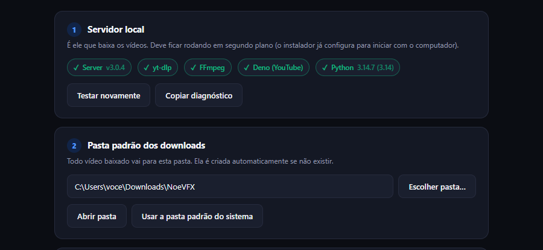
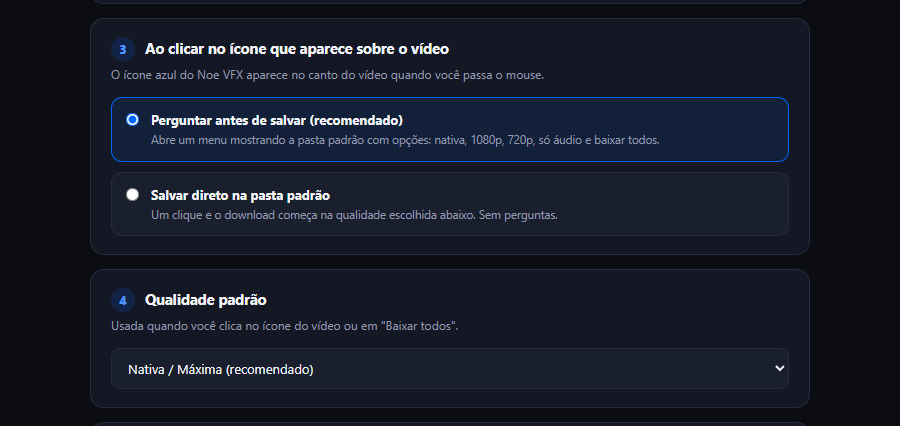
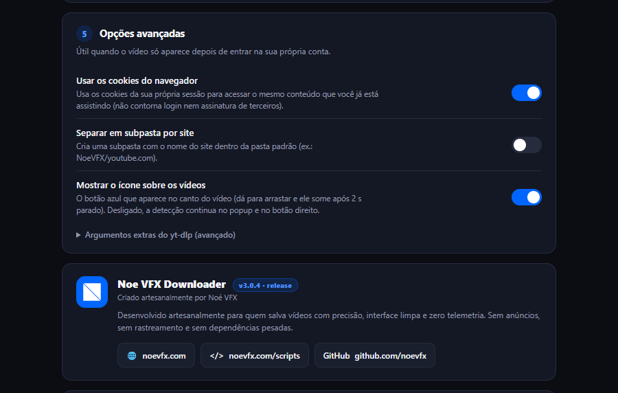

Ajuste ao seu jeito de trabalhar.
Abra o popup da extensão e clique na engrenagem. As configurações valem para o aplicativo local e ajudam a manter seus downloads organizados.
Pasta padrão e diagnóstico.
Escolha onde salvar downloads comuns. Sem uma escolha anterior, o destino é NoeVFX dentro da pasta de vídeos do usuário. “Abrir pasta” mostra os arquivos; “Usar a pasta padrão do sistema” volta ao destino padrão.
O envio ao projeto usa a pasta do trabalho identificada naquele pedido. Alterar a pasta padrão não muda o destino do projeto.

Os indicadores verificam app local, yt-dlp, FFmpeg, Deno e Python. FFmpeg une e converte mídia; Deno atende necessidades de extração do YouTube. Se uma ferramenta faltar, rode o instalador novamente.
Clique direto ou escolha antes.
“Perguntar antes de salvar” abre o menu sobre o vídeo. “Salvar direto” começa o download na qualidade padrão. Se você costuma enviar referências para o projeto, manter o menu disponível deixa os destinos Adobe à vista.
Defina a qualidade padrão e a visibilidade do botão. Desligar o ícone sobre o vídeo não remove a extensão: o popup e o menu do navegador continuam sendo alternativas.

Login, cookies e subpastas.
Para conteúdo que exige sua sessão, faça login normalmente na plataforma. Com a opção de cookies habilitada, o app usa os dados necessários da sua sessão no pedido local. Isso não contorna assinatura, restrições de acesso ou DRM.
“Separar em subpasta por site” organiza downloads comuns por domínio. No envio ao Adobe, a pasta do projeto tem prioridade.
Argumentos extras do yt-dlp são uma opção avançada. O servidor aceita apenas uma lista de opções permitidas. Mantenha o campo vazio se não precisar de um ajuste específico.

Use Salvar configurações após alterar os campos. As capturas são referências; a disposição pode mudar entre versões.